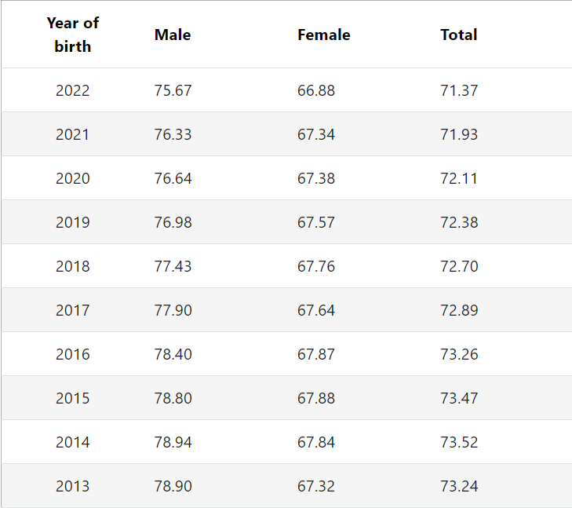
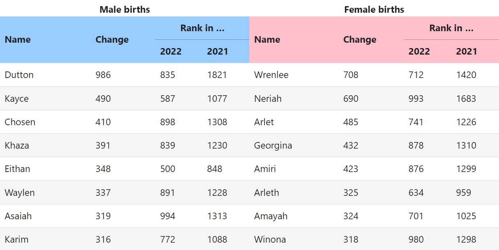
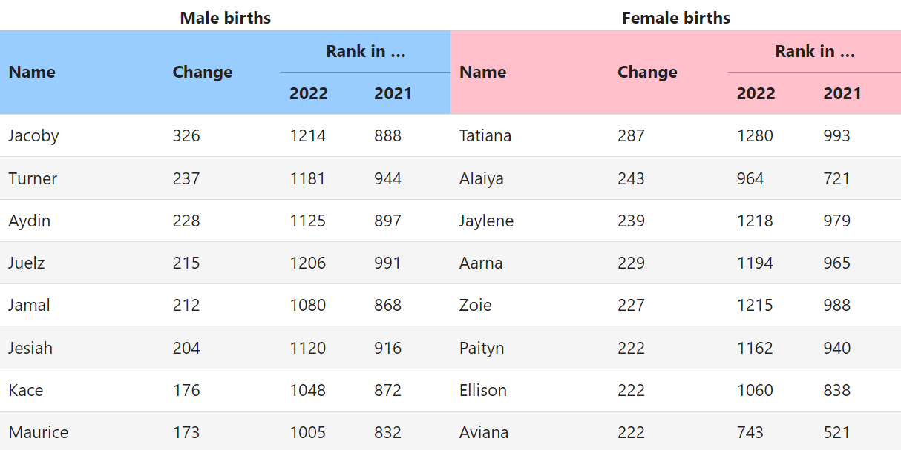

American Social Security Administration baby names data
History: In 1998, the Social Security Administration published Actuarial Note #139, Name Distributions in the Social Security Area, August 1997, on the distribution of given names of Social Security number holders. The note, written by actuary Michael W. Shackleford, gave birth to the present website.
With that, the wider public gained easy access to a simple yet large database of names given to Americans each year. The US being the largest community of native speakers of English, it allows to make conclusions backed by data about the trends in giving names.

Fig 1. Percentage of all names represented in the top 1000 names

Fig 2. Increase in name popularity from 2021 to 2022

Fig 3. Decrease in name popularity from 2021 to 2022
Sources:
Social Security Administration website. https://www.ssa.gov/oact/babynames/stats.html. Accessed 22.12.2023.